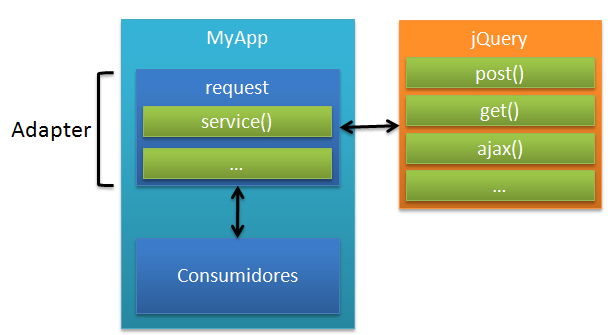

#Javascript
#y
#JQuery
###Javascript
###Temario
- Conceptos Básicos:
Variables,Funciones,Arreglos,Objetos,clases
- Herencia
- Operadores de Comparación
- Buenas prácticas
- Prácticas útiles
- Buenas prácticas orientadas al diseño
- Tips para Predictibilidad y ordenación en el desarrollo
##Javascript
###Temario (cont)
- Templates js
- Convenciones para extensibilidad de librerías
- Polyfills
##Conceptos Básicos
###variables
var name='pepe';
###Funciones:
function f1 (p){...};
var f2 = function (p){...}
f2('juan');
###Arreglos:
var nros = [ 1, 2, 3, 4 ];
var myArray = [ 'hello', 'world' ];
myArray.push('new');
var myArray = [ 'h', 'e', 'l', 'l', 'o' ];
var myString = myArray.join(''); // 'hello'
var mySplit = myString.split('');
// [ 'h', 'e', 'l', 'l', 'o' ]
//poco recomendado
var colors = new Array("red", "green", "blue");
var numbers = new Array(1, 2, 3, 4);
##Objetos nativos
###Date
var d = new Date();
var d = new Date(milliseconds);
var d = new Date(dateString);
var d = new Date(year, month, day, hours, minutes, seconds, milliseconds);
[Ejemplos](http://www.w3schools.com/jsref/jsref_obj_date.asp "Ejemplos y definición completa ")
##Objetos nativos
###Math
var x = Math.PI; // Returns PI
var y = Math.sqrt(16); // Returns the square root of 16
[Ejemplos](http://www.w3schools.com/jsref/jsref_obj_math.asp "Ejemplos y definición completa ")
##Objetos nativos
###Number
var num = new Number(value);
[Métodos](http://www.w3schools.com/jsref/jsref_obj_number.asp "Definición completa ")
###String
var txt = new String("string");
//or more simply:
var txt = "string";
[Métodos](http://www.w3schools.com/jsref/jsref_obj_string.asp "Definición completa ")
###Objetos:
var ejemplo = {
temas: "JS y JQuery",
tipo: "Curso de JQuery"
}; // (JSON)
// poco recomendable
var ejemplo = new Object();
ejemplo.temas = "JS y JQuery";
ejemplo.tipo = "Curso de JQuery";
###"CLASES"
####como objeto literal
var presentacion = {
this.titulo = 'HTML5,CSS3 Y JS';
this.tipo = 'Presentación';
this.autor = 'F.Ferrero';
this.getInfo = function() {
return this.titulo +
' Dictado por: ' + this.author +
' tipo de clase:' this.type;
};
}
alert (presentacion.getInfo());
###"Clases"
####como funciones
function Clase (title,type,author) {
this.titulo = title;
this.tipo = type;
this.autor = author;
this.getInfo = function() {
return this.titulo + ' Dictado por: ' + this.author +' tipo de clase:' this.type;
};
}
var presentación=new Clase('HTML5,CSS3 Y JS','Presentación', 'F.Ferrero');
alert (presentacion.getInfo());
##herencia
###Herencia basada en Object
- Tambien llamada herencia prototipal, es cuando un objeto hereda de otro sin invocar un constructor
- En ECMAScript 5 el método Object.create() es la manera más fácil
//instance:
var person = {
name: "pepe",
sayName: function() {
alert(this.name);
}
};var myPerson = Object.create(person);
myPerson.sayName(); // pepe
Copia el mismo prototipo que person, por lo tanto tiene acceso a las mismas propiedades hasta que se definan nuevos.
//Por ej, definir myPerson.sayName() automaticamente quita acceso a person.sayName():
myPerson.sayName = function() {
alert("Anonymous");
};
myPerson.sayName(); //"Anonymous"
person.sayName(); // "pepe"
Además Object.create() permite un segundo parámetro que permite especificar propiedades adicionales
var myPerson = Object.create(person, {
name: {
value: "Greg"
}
});
myPerson.sayName(); // pops up "Greg"
person.sayName(); // pops up "pepe"
###Object masquerading
Esta técnica hace uso de el scope de la variable especial this y del prototipo de la función
function ClassA(sColor) {
this.color = sColor;
this.sayColor = function () {
alert(this.color);
};
}
function ClassB(sColor) {
this.newMethod = ClassA;
this.newMethod(sColor);
delete this.newMethod;
}
En este código, el metodo newMethod es asignado ClassA (el nombre de la funcion es simplemente un puntero a la función).
Después, el método es llamado, pasando el argumento del constructor de ClassB.
La ultima linea elimina la referencia a ClassA, Así no puede ser llamado más tarde
Los nuevo métodos debe ser agregados luego de borrar:
function ClassB(sColor, sName) {
this.newMethod = ClassA;
this.newMethod(sColor);
delete this.newMethod;
this.name = sName;
this.sayName = function () {
alert(this.name);
};
}
//prueba:
var objA = new ClassA(“red”);
var objB = new ClassB(“blue”, “pepe”);
objA.sayColor(); //outputs “red”
objB.sayColor(); //outputs “blue”
objB.sayName(); //outputs “pepe”
Esto hace posible emular herencia múltiple, en caso de tener el mismo método en más de una clase padre se toma como prioritario el último que se agregó
function ClassZ() {
this.newMethod = ClassX;
this.newMethod();
delete this.newMethod;
this.newMethod = ClassY;
this.newMethod();
delete this.newMethod;
}
##Prototype chaining / type based.
Prototype es una propiedad del objeto Function, que actúa como un template sobre el cual se van a crear nuevos objetos. Mas precisamente, las propiedades y métodos del objeto prototype van a ser pasados a todas las instancias de esa clase.
El ejemplo anterior utilizando prototype chaining quedaría de la siguiente manera:
function ClassA(){
};
ClassA.prototype.nombre = “”;
ClassA.prototype.identificarse = function(){
alert(this.nombre);
};
function ClassB(){
};
ClassB.prototype = new ClassA();
De ahora en adelante, todos los objetos creados con ‘ClassB’ van a tener, también, los mismos métodos y propiedades de la instancia de ‘ClassA’. Y si queremos agregar mas métodos y propiedades, lo único que tenemos que hacer es agregárselos al prototype
de ‘ClassB’.
Lo malo de este método para emular herencia, es que no se puede pasar parámetros a la clase base, como hicimos en el ejemplo de Object masquerading.
Lo bueno, es que el operador instanceof funciona de una manera única: por cada instancia de ClaseB, instanceof nos retorna true tanto con ‘ClaseA’ como con ‘ClaseB’:
var miobjeto = new ClassB();
alert(miobjeto instanceof ClassB); // true
alert(miobjeto instanceof ClassA); // true
#Peculiaridades del lenguaje
###Valores que devuelven verdadero (true)
'0';
'any string'; // cualquier cadena
[]; // un arreglo vacío
{}; // un objeto vacío
1; // cualquier número distinto a cero
###Valores que devuelven falso (false)
0;
''; // una cadena vacía
NaN; // la variable JavaScript "not-a-number" (No es un número)
null; // un valor nulo
undefined; // tenga cuidado -indefinido (undefined) puede ser redefinido
###Operadores de Comparación
#Buenas prácticas
###Uso de null/undefined
#####Null
A menudo confundido con "undefined".
####Debería ser usado en estos casos
1. Inicializar una variable que a la que le va a ser asignada un objeto
2. Para comparar con una variable inicializada que puedo o no tener un objeto
3. Para pasar a una funcion donde se espera un objeto
4. Como valor de retorno de una funcion de la que se espera un objeto
####Algunos casos en los que null NO debería ser usado
1. para testear si un argumento fue pasado.
2. no testear una variable no inicializada por el valor null.
###ej de uso:
var person = null;
function getPerson() {
if (condition) {
return new Person("pepe");
} else {
return null;
}
}
var person = getPerson();
if (person !== null) {doSomething();}
// mal: Testing de variable no inicializada
var person;
if (person != null) {doSomething();}
// mal: testeo si un argumento fue pasado
function doSomething(arg1, arg2, arg3, arg4) {
if (arg4 != null) {
doSomethingElse();
}
}
##Semántica
- la mejor forma de ver null es como un marcador de posicion de un objeto (es una referencia).
- se debería aplicar el mismo concepto que en cualquier lenguaje orientado a ojetos
#####Undefined
- Atención: null [==](#/22 "Ejemplos") undefined es true. Sin embargo, tienen usos distintos
variables que no fueron inicializadas tienen el valor undefined, es decir, están esperando por un valor real.
Ejemplo:
// mal (conceptualmente)
var person;
console.log(person === undefined); //true
###### - la raíz del error está en que el operador `typeof` devuelve el string “undefined” para variables no definidas y no declaradas.
Ejemplo:
// foo no está declarada
var person;
console.log(typeof person); //"undefined"
console.log(typeof foo); //"undefined"
Aplicabilidad de esta semántica
var person = null;
console.log(person === null); //true
- Setear la variable a null indica que tenemos la intención de asignarle un objeto.
- typeof devuelve “object” para null, por lo que se puede diferenciar de undefined.
### sentencia with
permite acceder a miembros de objetos omitiendo el nombre principal de la variable
var book = {
title: "Mis Memorias",
author: "Armando Estaban Quito"
};
var message = "El libro es";
with (book) {
message += title;
message += " escrito por " + author;
}
- además de ser propenso a la confusión de nombres de variables, el motor js y minificadores se ven obligados a saltear la optimizacion para evitar pisar variables
- no está permitido en ["strict mode"](#/44"Explicación de strict mode en esta presentación")
###for-in Loop
se usa para recorres las propiedades de un objeto
var prop;
for (prop in object) {
console.log("Property name is " + prop);
console.log("Property value is " + object[prop]);
}
Devuelve todas las propiedades definidas en su Prototype (tambien por la implementacion de herencia).
Para evitar este efecto se puede usar la propiedad hasOwnProperty
Ej:
var prop;
for (prop in object) {
if (object.hasOwnProperty(prop)) {
console.log("Property name is " + prop);
console.log("Property value is " + object[prop]);
}
}
// Ejemplo no recomendable
var values = [ 1, 2, 3, 4, 5, 6, 7],
i;
for (i in values) {process(items[i]);}
for-in está iterando sobre las claves del objeto y su prototipo, así que no se limita solamente a las propiedades indexadas numericamente.
##Immediate Function Invocation
es posible definir una funcion e invocarla inmediatamente en su definición
####ej de función anónima
var doSomething = function() {
// function body
};
####ej de invocación inmediata
// uso poco claro ¿porque? (además de la asignación final)
var value = function() {
// function body
return {
message: "Hi"
}
}();
El problema es que son muy similares, y sólo se puede diferenciar al ver los paréntesis finales.
para mejorar la legibilidad se usan paréntesis que engloban la función:
var value = (function() {
// function body
return {
message: "Hi"
}
}());
* Nota: esta práctica es muy usada cuando se quiere crear un [plugin en jQuery](jquery2.html#/2 "cómo hacer un plugin en jquery (parte 3 de esta presentación)")
###La palabra clave this
Hace referencia al objeto en donde el método está siendo invocado. El valor de this es determinado utilizando una serie de pasos sencillos:
* Si la función es invocada utilizando Function.call o Function.apply, this tendrá el valor del primer argumento pasado al método. Si el argumento es nulo (null) o indefinido (undefined), this hará referencia el objeto global (el objeto window);
* Si la función a invocar es creada utilizando Function.bind, this será el primer argumento que es pasado a la función en el momento en que se la crea;
* Si la función es invocada como un método de un objeto, this referenciará a dicho objeto;
* De lo contrario, si la función es invocada como una función independiente, no unida a algún objeto, this referenciará al objeto global.
#Prácticas útiles
###Funciones como parámetros
####Pasar una función anónima como un argumento
var myFn = function(fn) {
var result = fn();
console.log(result);
};
myFn(function() { return 'hello world'; }); // muestra en la consola 'hello world'
####Pasar una función nombrada como un argumento
var myFn = function(fn) {
var result = fn();
console.log(result);
};
var myOtherFn = function() {
return 'hello world';
};
myFn(myOtherFn); // muestra en la consola 'hello world'
##Clase Function
###(como constructor de nuevas funciones)
New Function(name, params,código)
var twoNumAverage = new Function("x", "y", "return (x + y)/2") ;
document.write(twoNumAverage(3,7));
###análogo a:
var twoNumAverage = function (x, y){
return (x + y)/2
};
document.write(twoNumAverage(3,7));
###Una función invocada utilizando Function.call
var myObject = {
sayHello : function() {
console.log('Hola, mi nombre es ' + this.myName);
},
myName : 'Rebecca'
};
var secondObject = {myName : 'Colin'};
myObject.sayHello() ; // registra 'Hola, mi nombre es Rebecca'
myObject.sayHello.call(secondObject); // registra 'Hola, mi nombre es Colin'
###Una función creada utilizando Function.bind
var myName = 'el objeto global',
sayHello = function () {
console.log('Hola, mi nombre es ' + this.myName);},
myObject = {myName : 'Rebecca'
};
var myObjectHello = sayHello.bind(myObject);
sayHello(); // registra 'Hola, mi nombre es el objeto global'
myObjectHello(); // registra 'Hola, mi nombre es Rebecca'
###Una función vinculada a un objeto
var myName = 'el objeto global',
sayHello = function() {
console.log('Hola, mi nombre es ' + this.myName);
},
myObject = {
myName : 'Rebecca'
},
secondObject = {
myName : 'Colin'
};
myObject.sayHello = sayHello;
secondObject.sayHello = sayHello;
sayHello(); // registra 'Hola, mi nombre es el objeto global'
myObject.sayHello(); // registra 'Hola, mi nombre es Rebecca'
secondObject.sayHello(); // registra 'Hola, mi nombre es Colin'
En algunas oportunidades, cuando se invoca una función que se encuentra dentro de un namespace amplio, puede ser una tentación guardar la referencia a la función actual en una variable más corta y accesible. Sin embargo, es importante no realizarlo en instancias de métodos, ya que puede llevar a la ejecución de código incorrecto. Por ejemplo:
var myNamespace = {
myObject: {
sayHello: function() {
console.log('Hola, mi nombre es ' + this.myName);
},
myName: 'Rebecca'
}
};
var hello = myNamespace.myObject.sayHello;
hello(); // registra 'Hola, mi nombre es undefined'
Para que no ocurran estos errores, es necesario hacer referencia al objeto en donde el método es invocado:
var myNamespace = {
myObject : {
sayHello : function() {
console.log('Hola, mi nombre es ' + this.myName);
},
myName : 'Rebecca'
}
};
var obj = myNamespace.myObject;
obj.sayHello(); // registra 'Hola, mi nombre es Rebecca'
###Strict Mode
Intenta definir una instancia de seguridad en la mecánica de parseo para minimizar errores
Válido tanto global como localmente (scope de funcion), aunque no se recomienda el uso global en caso de hacer concatenacion de fuentes (concatenacion y baking)
// global strict
"use strict";
function doSomething() {
// code
}
// recomendado
function doSomething() {
"use strict";
// code
}
Para evitar escribir cada funcion en modo estricto una a una, se puede usar immediate function invocation:
// Good
(function() {
"use strict";
function doSomething() {
// code
}
function doSomethingElse() {
// code
}
})();
###Igualdad
la coerción de tipos causa que variables de un tipo específico sean convertidas automáticamente a un tipo diferente para una operacion particular, lo que puede traer consecuencias indeseadas
En el caso particular de [== y !=](#/22 "Ejemplos") ocurra una coerción si no son del mismo tipo
ejemplo:
// string y nro
console.log(5 == "5"); // true
// 25 en hexa y "25"
console.log(25 == "0x19"); // true
Esto es análogo al uso de la funcion de casteo Number().
ídem con la comparación de booleano con nro
(falso = 0; true=1)
ej:
// The number 1 and true
console.log(1 == true); // true
// The number 0 and false
console.log(0 == false); // true
// The number 2 and true
console.log(2 == true); // false
si uno de los elementos es Object y el otro no, se llama a la funcion (método) `valueOf()` para obtener un valor primitivo para comparar
si `valueOf()` no está definido, se invoca a `toString()` y se continúa la conversión si corresponde
ej
var object = {
toString: function() {
return "0x19";
}
};
console.log(object == 25); // true
Coerción entre null y undefined
console.log(null == undefined); // true
Para evitar la coerción, utilizar === y !==.
Si los tipos no coinciden, automáticamente se los considera diferentes
// The number 5 and string 5
console.log(5 == "5"); // true
console.log(5 === "5"); // false
// The number 25 and hexadecimal string 25
console.log(25 == "0x19"); // true
console.log(25 === "0x19"); // false
// The number 1 and true
console.log(1 == true); // true
console.log(1 === true); // false
// The number 0 and false
console.log(0 == false); // true
console.log(0 === false); // false
// The number 2 and true
console.log(2 == true); // false
console.log(2 === true); // false
var object = {
toString: function() {
return "0x19";
}
};
// An object and 25
console.log(object == 25); // true
console.log(object === 25); // false
// Null and undefined
console.log(null == undefined); // true
console.log(null === undefined);// false
###eval()
toma un string y lo compila como código js, permitiendo más flexibilidad y poder usar código nueov en tiempo de ejecucion (por ej, bajar del servidor una función creada ahdoc y agregarla al closure actual)
ejemplo:
eval("alert('Hi!')");
var count = 10;
var number = eval("5 + count");
console.log(count); // 15
###Alternativas similares
var myfunc = new Function("alert('Hi!')");
setTimeout("document.body.style.background='red'", 50);
setInterval(function() {
document.title = 'It is now ' + (new Date());
}, 1000);
setInterval("document.title = 'It is now '" + (new Date()), 1000);
//todas estas son consideradas malas prácticas
setTimeout(function() {
document.body.style.background='red';
}, 50);
strict mode en ECMAScript 5 restringe eval(), evitando que se creen nuevas variables y funciones en el scope actual.
###Primitive Wrapper Types
hay 3 wrappers : String, Boolean,
and Number.
su finalidad es la misma que en lenguajes convencionales, proveer métodos como objetos
ej:
var name = "pepe";
console.log(name.toUpperCase());
esto es posible porque JS crea una nueva instancia del wrapper object solamente para esa ejecución; inmediatamente el objeto es destruido y se mantienen el tipo primitivo.
ejemplo de comprobación
var name = "pepe";
name.author = true; //en este punto se destruye el wrapper
console.log(name.author); // undefined, se crea un nuevo wrapper con la propiedad (metodo) author sin inicializar
###buenas prácticas de diseño
- evitar el alto acoplamiento con html, por ejemplo, handlers de eventos
problemas con este acercamiento:
- doSomething() debe estar definida cuando el botón es clickeado (problema de latencia en mobile).
- mantenibilidad: cambiar la funcion asociada al evento implica modificar los htmls necesarios, uno a uno, además del archivo js
####alternativa:
function doSomething() {
// code
}
var btn = document.getElementById("action-btn");
btn.addEventListener("click", doSomething, false);
[polyfill](#/86 "Breve explicación de polyfills ") para IE8 y anteriores (no soportan addEventListener)
function addListener(target, type, handler) {
if (target.addEventListener) {
target.addEventListener(type, handler, false);
}
else if (target.attachEvent) {
target.attachEvent("on" + type, handler);
}
else {
target["on" + type] = handler;
}
}
function doSomething() {
// code
}
var btn = document.getElementById("action-btn");
addListener(btn, "click", doSomething);
###Predictibilidad en el método de diseño
el código html se espera encontrar dentro de el archivo html, y no en JS, evitar :
var div = document.getElementById("my-div");
div.innerHTML = "
Error
Invalid e-mail address.
";
###Alternativa #1:
* carga del servidor (usar ajax para recuperar un template html)
ej de carga de un dialogo:
function loadDialog(name, oncomplete) {
var xhr = new XMLHttpRequest();
xhr.open("get", "/js/dialog/" + name, true);
xhr.onreadystatechange = function() {
if (xhr.readyState == 4 && xhr.status == 200) {
var div = document.getElementById("dlg-holder");
div.innerHTML = xhr.responseText;
oncomplete();
}
else {
// handle error
}
};
xhr.send(null);
}
// jQuery
function loadDialog(name, oncomplete) {
$("#dlg-holder").load("/js/dialog/" + name, oncomplete);
}
especial para templates grandes y complejos
###Alternativa #2:
* Client-Side Templates: htmls con patrones a reemplazar por js
ej:
los valores entre llaves se corresponden con valores de variables que se definen en js.
Handlebars sugiere que se use el tag `
se tiene que incluir la libreria de Handlebars, que crea un objeto global "Handlebars" que compila el template a una función:
var script = document.getElementById("list-item"),
templateText = script.text,
template = Handlebars.compile(script.text);
la variable template contiene una funcion que,al ejecutar, devuelve un string formateado a html
var result = template({
text: "Fourth item",
url: "/item/4"
});
//render condicional
{{#if items}}
{{/if}}
// return an empty string
var result = template({
items: []
});
// return HTML for a list with two itemsvar result = template({
items: [
{
text: "First item",
url: "/item/1"
},
{
text: "Second item",
url: "/item/2"
}
]
});
#Convenciones
##objetos globales
- problema: Colisiones de nombres
### globales por accidente
function doSomething() {
var count = 10;
title = "JavaScript y Jquery"; //al no ser definida con la palabra clave var, automáticamente se asigna como global
}
function doSomething() {
var count = 10;
name = "pepe"; //atención: variable global ya existente
}
en este ejemplo, el problema es grave, porque se está sobreescribiendo la variable global window.name, que suele ser usado por los iframes y links
Esto es sintácticamente correcto, por lo que ES no da error, sin embargo, existen herramientas como JSLint y JSHint (incluso dan warning si se está modificando algunos globales )
si se usa modo estricto, se puede detectar asignaciones a variables no declaradas
ej
"use strict";
foo = 10; // ReferenceError: foo is not defined (Internet Explorer 10+, Firefox 4+, Safari 5.1+, Opera 12+, and Chrome)
##Estrategias para evitar globales
###Único-Global
Dado el siguiente ejemplo:
function Book(title) {
this.title = title;
this.page = 1;
}
Book.prototype.turnPage = function(direction) {
this.page += direction;
};
var Chapter1 = new Book("Introduction to Style Guidelines");
var Chapter2 = new Book("Basic Formatting");
var Chapter3 = new Book("Comments");
se crean 4 objetos globales book y chapters
para evitar el uso de tantos objetos, se define un solo objeto contenedor
var container = {};
container.Book = function(title) {
this.title = title;this.page = 1;
};
container.Book.prototype.turnPage = function(direction) {
this.page += direction;
};
container.Chapter1 = new container.Book("Introduction to Style Guidelines");
container.Chapter2 = new container.Book("Basic Formatting");
container.Chapter3 = new container.Book("Comments");
y a partir de este enfoque se puede agregar el concepto de namespaces, por ejemplo container.UI o container.events para englobar los objetos en categorías más exactas.
De esta manera se puede manejar objetos en diferentes archivos, con un manejador extra para el caso de querer agregar objetos a namespaces que pueden no existir con los archivos que están incluidos actualmente
var YourGlobal = {
namespace: function(ns) {
var parts = ns.split("."),
object = this,
i, len;
for (i=0, len=parts.length; i < len; i++) {
if (!object[parts[i]]) {
object[parts[i]] = {};
}
object = object[parts[i]];
}
return object;
}
};
el método namespace() crea objetos sin destruir los existentes a partir de un string que se recibe como parametro y devuelve un objeto (namespace)
YourGlobal.namespace("Books.test");
YourGlobal.Books.test.author = "pepe";
YourGlobal.namespace("Books.ejemplo2");
console.log(YourGlobal.Books.test.author);
YourGlobal.namespace("Books").ANewElement = {};
###Modules
un módulo extiende el enfoque de un unico global de manera generica, sin crear globales nuevos ni namespaces sino que se delega a una única funcion que ejecuta una taera o publica una interface
####Ejemplos:
- YUI Modules
YUI.add("module-name", function(Y) {
// module body
},
"version",
{ requires: [ "dependency1", "dependency2" ] });
####Uso:
YUI.add("my-books", function(Y) {
// Add a namespace
Y.namespace("Books.NewBook");
Y.Books.NewBook.author = "pepe";
},
"1.0.0",
{ requires: [ "dependency1", "dependency2" ] });
Para usar el modulo junto con uno o más módulos a cargar:
YUI().use("my-books", "another-module", function(Y) {
console.log(Y.Books.test.author);
});
se carga “my-books” y “another-module”,
asegurando que todas las dependencias se cargaron y se ejecutan los cuerpos de los módulos en el orden especificado. Finamente se ejecuta la funcion callback cuando se termina de ejecutar la carga.
###AMD modules
se comporta de manera similar a YUI modules, usando la funcion global define() con el nombre del modulo, luego las dependencias y despues la funcion "factory" la diferencia es que los parámetros a la funcion factory por separado
define("module-name", [ "dependency1", "dependency2" ],
function(dependency1, dependency2) {
// module body
});
de esta manera cada dependencia nombrada en lo parámetros termina creando un objeto que garantiza que no hay colisión de nombres,
por ej
define("my-books", [ "dependency1", "dependency2" ],
function(dependency1, dependency2) {
var Books = {};
Books.test = {
author: "pepe"
};
return Books;
});
###Cero-Globales
se usa cuando todos los objetos están definidos en un solo arhivo, por lo tanto tienen un mismo closure, y si bien los objetos no son globales, son locales a todo el archivo
ej:
//immediate function call
(function(win) {
var doc = win.document;
// declare other variables here
// other code goes here
}(window));
en este caso, el closure lo define el objeto window, un objeto global standard (pero no crea objetos globales, por lo que si el objeto que se recibe como parámetro no es de alcance global, no se puede acceder desde afuera del archivo).
para asegurarnos que no se creen variables, usar el modo estricto para los navegadores que lo soporten.
(function(win) {
"use strict";
var doc = win.document;
// declare other variables here
// other code goes here
}(window));
#Algunos patrones de diseño
##Chain
###(Encadenar eventos)
$('#id1')
.html('HOLA')
.css('color', '#00F')
.show();
para que el encadenamiento funcione:
var MyObj = {
_list: [],
add: function(o) {
this._list.push(o);
// Devolvemos la instancia
return this;
}
};
// Chaining en accion
MyObj
.add(1)
.add(2)
.add(3);
Si no se devolviera `this` el metodo add se haría sobre `undefined`
###Facade
es un objeto que define una nueva interfaz para otro existente.
se usa como alternativa a la herencia, si no es aplicable.
//ej de wrapper para elementos que no implementan lista de clases html5
function DOMWrapper(element) {
this.element = element;
}
DOMWrapper.prototype.addClass = function(className) {
element.className += " " + className;
};
DOMWrapper.prototype.remove = function() {
this.element.parentNode.removeChild(this.element);
};
// Usage
var wrapper = new DOMWrapper(document.getElementById("my-div"));
// add a CSS class
wrapper.addClass("selected");
// remove the element
wrapper.remove();
- filtra acceso a propiedades fácilmente, y se puede definir funcionalidad más sencilla y descriptiva
- si el objeto enmascarado cambia, es sencillo de mantener
- si el facade implementa una interfaz especifica para un solo objeto se considera un adapter, aunque la principal diferencia entre uno y otro es que facade crea una interfaz nueva mientras que adapter crea una interfaz existente

###Polyfills
la finalidad de los polyfills (también llamados shims) es implementar funcionalidades que ya se encuentran de modo nativo en browsers nuevos, especialmente funcionalidades html5
por ej `forEach()` definido para arrays en ECMAScript 5 puede ser usado en usado en cualquier navegador que soporte ECMAScript 3 mediante el uso de alguna librería como si fuera nativo.
###para evitar que estos patrones modifiquen nuestro codigo
se pueden adoptar estas estrategias:
1. Prevenir extensión - no se pueden agregar propiedades nuevas, pero las existentes puedes ser modificadas o borradas.
2. Sellar - lo mismo que el caso anterior pero sin poder borrar propiedades.
3. Congelar - todos los campos son sólo lectura.
Desde Internet Explorer 9+, Firefox 4+, Safari 5.1+, Opera 12+ y Chrome existen metodos que permiten hacer lock sobre nuestros objetos:
Caso 1. Object.preventExtension() y Object.isExtensible()
var person = {
name: "pepe"
};
// lock down the object
Object.preventExtension(person);
console.log(Object.isExtensible(person)); // false
person.age = 25; // falla sin avisar salvo que se use strict mode
Caso 2. Object.isSealed() y Object.seal():
var person = {
name: "pepe"
};
Object.seal(person);
console.log(Object.isExtensible(person)); // false
console.log(Object.isSealed(person)); // true
delete person.name; // fails silently unless in strict mode
person.age = 25; // fails silently unless in strict mode
Caso 3 .Object.isFrozen() y Object.freeze():
var person = {
name: "pepe"
};
Object.freeze(person);
console.log(Object.isExtensible(person)); //false
console.log(Object.isSealed(person)); // true
console.log(Object.isFrozen(person)); // true
person.name = "Greg"; // fails silently unless in strict mode
person.age = 25; // fails silently unless in strict mode
delete person.name; // fails silently unless in strict mode
 facundo.a.ferrero@accenture.com
facundo.a.ferrero@accenture.com
 @facundo_ferrero
@facundo_ferrero